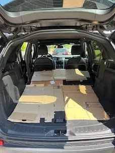

Personal · Reliable · Pet-Friendly · English-Speaking
Need a moving company in Zurich but hate the idea of a 300 CHF minimum and three strangers in your flat? I get it. I offer a simple, personal moving service with a spacious SUV — boxes, furniture, even a sofa or a bed!
As an expat myself, I know how stressful it can be to move in a new country. No agency overhead, no dispatchers — you deal directly with me. I speak English, I show up on time, and your pets are always welcome.
Help Me Move is a personal moving service based in Zurich, offering affordable moving help across Kanton Zürich and Aargau. Whether you need a moving company for a full apartment relocation, furniture transport, bed moving, sofa transport, personal transport, or just a few boxes — this is a flexible, English-speaking alternative to big moving companies in Zurich. Need a safe ride to the vet for your pet? That’s covered too. No surprises, ever.
Vehicle cargo dimensions: 190 cm (L) × 110 cm (W) × 80 cm (H)

You only pay for the time used. Most moves take up to 3 hours. Contact me for a quick estimate based on your situation.
I am available weekdays from 17:00 and occasionally on certain weekends. Get in touch to check availability for your date.
Big moving companies in Zurich typically charge 150–300 CHF per hour with minimums of 3–4 hours. Here the rate is a flat 100 CHF per hour — no minimums, no extra charges for stairs, fuel, or parking.
I cover Zurich city, the greater Zurich area (Kanton Zürich), and Aargau including Aarau — roughly a 40 km radius from central Zurich. This includes Winterthur, Baden, Dietikon, Schlieren, Opfikon, Regensdorf, Adliswil, Thalwil, and Wädenswil. You can see the service area on Google Maps. Moves to other cantons may be possible depending on the situation — feel free to ask.
Yes! The SUV cargo space is 190 cm long, 110 cm wide, and 80 cm high — fits most sofas, single and double beds, wardrobes, and large boxes. Tip: Many modern mattresses can be folded in half, which saves a lot of space. For bed frames, disassembling them beforehand (legs off, slats bundled) means everything fits more efficiently and fewer trips are needed.
Absolutely. Dogs and cats are welcome to travel in the vehicle during the move at no extra cost.
Yes — if you need a calm, pet-friendly ride to a veterinary clinic in Zurich or Aargau, I can help with that too. Your pet travels safely and comfortably, without the stress of public transport.
Yes — fully fluent in English. As an expat myself, I understand the challenges of settling in Switzerland and offer a relaxed, English-speaking experience.
Yes! I regularly help with IKEA pickups, as well as collecting items bought on Ricardo, Facebook Marketplace, or other second-hand platforms — and getting them safely to your place across Zurich and Aargau.
Yes, I assist with loading and unloading. For heavier items, having an extra pair of hands on your side is always a good idea. No extra charge for stairs or elevators.
Possibly — it depends on distance, timing, and availability. Get in touch and we can discuss what works.
Yes, you are welcome to ride along. It’s your move — I’m just here to make it easier.
As early as possible is always better, but last-minute requests are welcome too. Just WhatsApp, email, or give me a call.